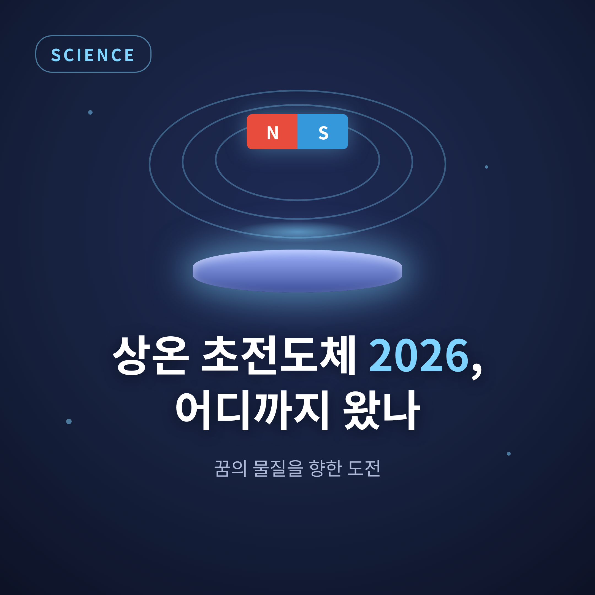
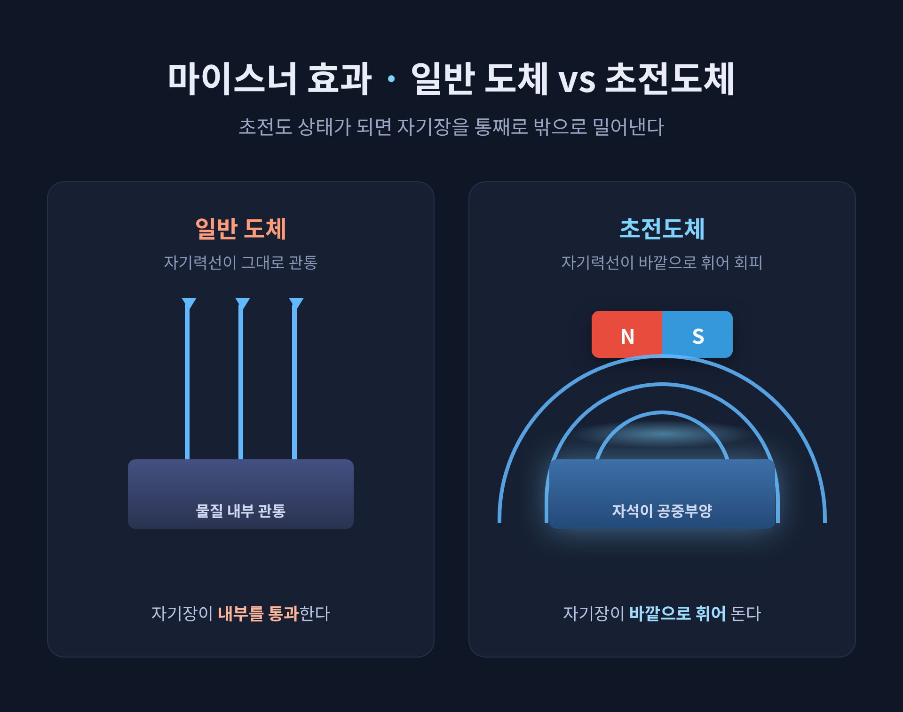
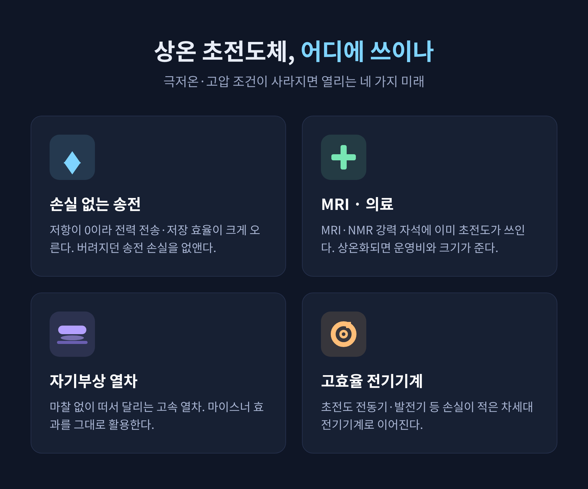
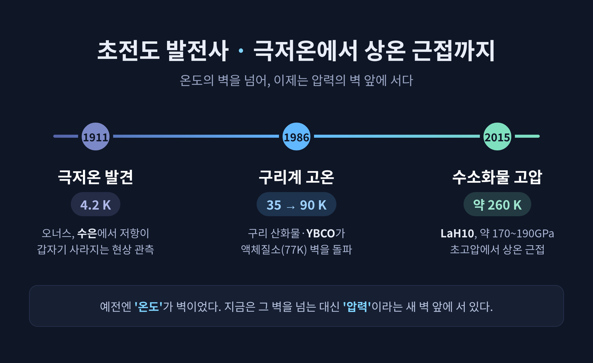

상온 초전도체 2026 — 꿈의 물질을 향한 도전, 어디까지 왔나

상온 초전도체에 관해 궁금하셨던 분들을 위해 준비했습니다.
2023년 LK-99 열풍 이후 이 분야가 지금 어디쯤 와 있는지, 2026년 기준으로 정리해 보겠습니다.
결론부터 말하면, '상온'은 어느 정도 다가섰지만 '상압'이라는 마지막 벽이 아직 남아 있습니다.
먼저 3줄 요약
- 2026년 현재 독립 검증된 최고 기록은 약 170~190GPa 초고압에서 작동하는 LaH10의 약 260K(상온 근접)입니다.
- 즉 '온도'는 거의 잡았으나, 그 대가로 '엄청난 압력'이라는 새 조건에 묶여 있어 실용화는 아직 멉니다.
- LK-99와 디아스 논문 사건은 '극적인 주장은 재현으로만 검증된다'는 교훈을 남겼습니다.
초전도체란 무엇인가
초전도체를 일반 금속과 가르는 성질은 두 가지입니다.
전기저항이 0이 되는 것, 그리고 자기장을 완전히 밀어내는 것입니다.
첫째, 전기저항 0.
보통 전선은 전류가 흐르면 저항 탓에 열로 에너지를 잃습니다.
초전도체는 그 손실이 없습니다.
초전도 고리에 전류를 흘리고 전원을 떼어내도, 전류가 아주 오랫동안 계속 흐릅니다.
이 '지속 전류'가 저항이 정말 0이라는 증거입니다.
둘째, 마이스너 효과입니다.
물질이 초전도 상태로 바뀌는 순간, 내부의 자기장을 통째로 밖으로 몰아냅니다.
1933년 발터 마이스너와 로베르트 옥센펠트가 발견했습니다.
초전도체 위에 자석이 둥둥 뜨는 공중부양 현상이 여기서 나옵니다.
그렇다면 왜 이런 일이 벌어질까요.
1957년 바딘·쿠퍼·슈리퍼가 내놓은 BCS 이론이 그 답을 줍니다.
전자들이 둘씩 짝지어 '쿠퍼 쌍'을 이루고, 원자 배열 사이를 저항 없이 통과한다는 설명입니다.
다만 구리계 산화물 같은 일부 물질은 이 이론만으로는 설명되지 않아, '비재래식'으로 따로 분류됩니다.

왜 '꿈의 물질'이라 부르는가
상온 초전도체란 0°C(273K) 이상에서 초전도성을 보이는, 아직은 가설에 가까운 물질입니다.
진짜 의미가 있으려면 상온과 상압, 두 조건을 동시에 만족해야 합니다.
지금의 초전도체는 액체 헬륨이나 질소로 극저온까지 식히거나, 엄청난 압력을 줘야만 작동합니다.
그래서 비싸고, 쓸 수 있는 곳이 제한됩니다.
이 까다로운 조건을 걷어낼 수 있다는 점, 그것이 핵심입니다.
기대되는 쓰임새는 이렇습니다.
- 손실 없는 송전: 저항이 없으니 전력을 보내고 저장하는 효율이 크게 오릅니다. 지금 송전 과정에서 버려지는 손실을 없앨 수 있습니다.
- 의료 장비: MRI와 NMR의 강력한 자석에 이미 초전도 전자석이 쓰입니다. 상온화되면 운영비와 크기 부담이 줄어듭니다.
- 자기부상 열차: 마찰 없이 떠서 달리는 고속 열차.
- 고효율 전기기계: 초전도 전동기와 발전기 등.
양자컴퓨터도 자주 거론됩니다.
다만 현재 초전도 큐비트는 극저온에서 동작하므로, 상온 초전도체와의 직접 연결은 아직 '가능성' 수준으로 보는 편이 정확합니다.

발전사: 극저온에서 상온 근접까지
이 분야는 온도를 끌어올려 온 역사이기도 합니다.
처음은 극저온이었습니다.
1911년 헤이커 카메를링 오너스가 수은을 액체 헬륨으로 식히다, 4.2K에서 저항이 갑자기 사라지는 것을 보았습니다.
초전도 현상의 최초 발견입니다.
이후 수십 년간 초전도는 절대영도에 가까워야만 가능한 현상으로 여겨졌습니다.
전환점은 1986년이었습니다.
IBM의 베드노르츠와 뮐러가 구리 산화물에서 약 35K의 초전도를 찾아냈고, 두 사람은 그 공로로 노벨물리학상을 받습니다.
이듬해 1987년, YBCO가 약 90K를 기록합니다.
액체질소 끓는점인 77K를 넘어선 최초의 물질입니다.
비싼 액체 헬륨 대신 값싼 액체질소로 식힐 수 있게 되면서, 응용의 문이 크게 열렸습니다.
그리고 2015년부터 새 흐름이 등장합니다.
수소가 풍부한 화합물에 엄청난 압력을 가하면 더 높은 온도에서 초전도가 나타난다는 발견입니다.
2019년 기준 공인된 최고 기록은 란타넘 데카하이드라이드(LaH10)로, 약 150~190GPa의 초고압에서 약 250~260K, 곧 영하 23도 안팎이었습니다.
상온에 바짝 다가선 셈입니다.
예전엔 '온도'가 벽이었습니다.
지금은 그 벽을 넘는 대신, '압력'이라는 새 벽 앞에 서 있습니다.

2023년 LK-99 논란이 남긴 것
이 이야기를 빼놓을 수 없습니다.
2023년 7월, 한국 연구진이 LK-99라는 물질이 상압에서 최대 400K(127°C)까지 작동하는 상온 초전도체라고 주장하는 사전논문을 공개했습니다.
시료가 부분적으로 떠오르는 영상이 함께 퍼지며 전 세계가 들끓었습니다.
그러나 다른 연구 그룹들은 그 결과를 재현하지 못했습니다.
분석 결과, 합성 과정에서 생긴 황화구리(Cu2S)가 초전도와 비슷해 보이는 가짜 신호를 냈다는 것이 다수의 결론이었습니다.
순수한 LK-99 자체는 오히려 부도체에 가까웠습니다.
부분 공중부양 역시 마이스너 효과의 증거로 보기 어렵다는 것이 검증 그룹들의 판단이었습니다.
비슷한 시기, 미국 로체스터대 랑가 디아스 그룹의 상온 초전도 주장도 큰 논란을 일으켰습니다.
2020년과 2023년의 두 논문은 데이터 조작 의혹 속에 모두 철회됐습니다.
디아스 본인은 의혹을 부인했고, 재현 시도는 실패했습니다.
성격은 서로 다릅니다.
LK-99는 불순물에 의한 오인 가능성, 디아스 사건은 의도적 조작 의혹입니다.
그러나 둘 다 극적인 상온 초전도 주장이 검증을 통과하지 못한 사례라는 점은 같습니다.
여기서 한 가지는 분명해 보입니다.
한 연구실의 발표는 끝이 아니라 시작일 뿐이라는 점입니다.
독립적인 다른 연구실들의 재현이 검증의 핵심입니다.
한쪽으로만 볼 일은 아닙니다.
LK-99 사례를 과학계의 실패로 보기보다, 자정 시스템이 정상 작동한 사례로 보는 시각이 일반적입니다.
다만 검증보다 앞서간 언론과 SNS의 과열은 경계할 대목입니다.
2026년 현재, 그리고 남은 과제
지금 위치를 정리해 보겠습니다.
2026년 4월 기준 독립적으로 검증된 최고 임계온도는, 약 170~190GPa 압력 아래 LaH10의 약 260K입니다.
상온 근접은 맞습니다.
한편 2022년에 나온 라타넘 기반 'hot hydride'의 약 100GPa에서 556K 주장은, 2026년 4월 현재까지 독립 그룹이 확인하지 못했습니다.
즉 검증 대기 상태로 보는 것이 맞습니다.
왜 아직 실용화하지 못할까요.
한계는 분명합니다.
- 압력의 벽: 100~200GPa을 견디는 유일한 장치인 다이아몬드 앤빌 셀은 시료를 현미경적으로 작은 부피에만 가둘 수 있습니다. 실제 소자에 넣을 수가 없습니다.
- 불안정성: 대부분의 수소화물은 압력을 빼는 순간 빠르게 분해됩니다. 상압에서 유지가 되지 않습니다.
결국 지금의 '상온 근접' 기록들은 모두 초고압이라는 조건에 묶여 있습니다.
'상온'은 어느 정도 잡았지만, '상압'이 숙제로 남았습니다.
다행히 방향은 잡혀 있습니다.
고압에서만 되던 초전도를 대기압 조건으로 옮기려는 상압화 연구가 이어집니다.
3원계 수소화물 설계, 전자-포논 결합을 강화하려는 시도 등이 진행 중입니다.
다만 이들 상당수는 아직 실험적 검증을 기다리는 단계입니다.
아직 완벽하지는 않습니다.
그러나 한 걸음씩 나아가고 있는 것은 분명합니다.
끝으로 한 마디만 더 드리겠습니다.
상온 초전도체를 둘러싼 지난 몇 년은, 한 줄로 압축하면 이렇습니다.
"극적인 주장일수록, 특별한 증거가 필요하다."
언젠가 이 물질이 정말 우리 곁에 올 수 있겠냐고 물으신다면, 저는 아직은 신중히 지켜볼 때라고 답하겠습니다.
조급함보다 검증이, 결국 꿈에 더 가까운 길일 것입니다.